Select a bird of your choice that you wish to work with. So many birds to choose from!
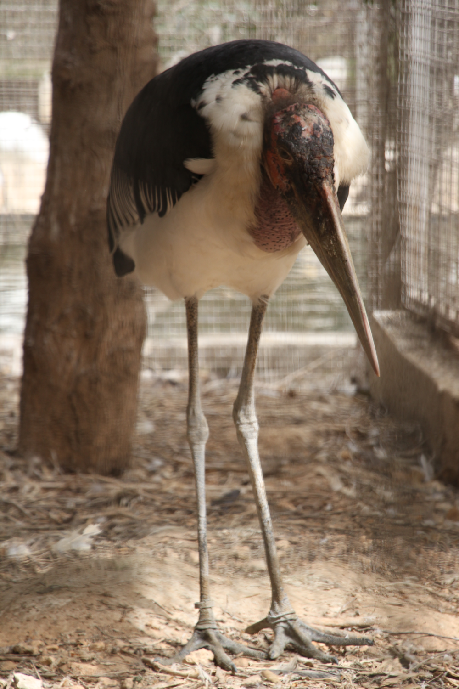 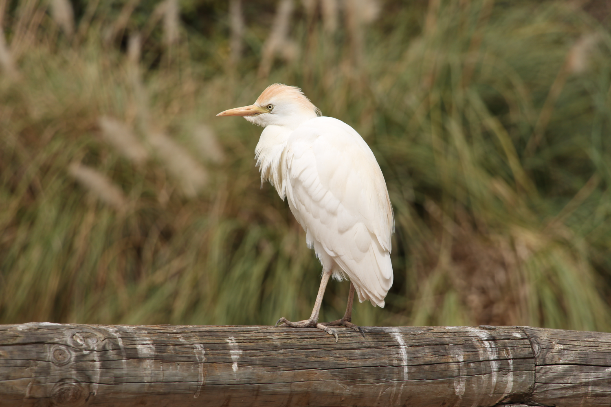 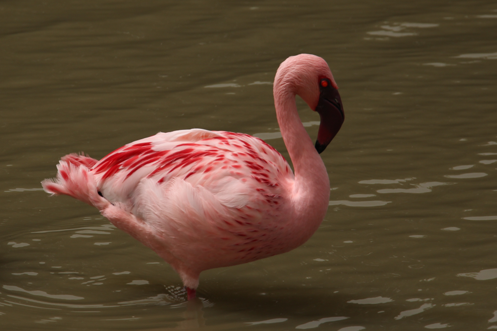 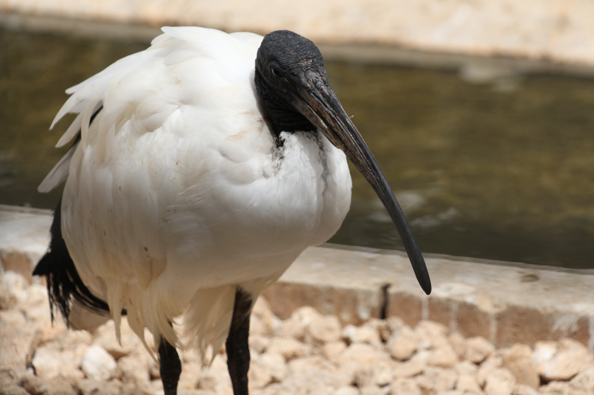 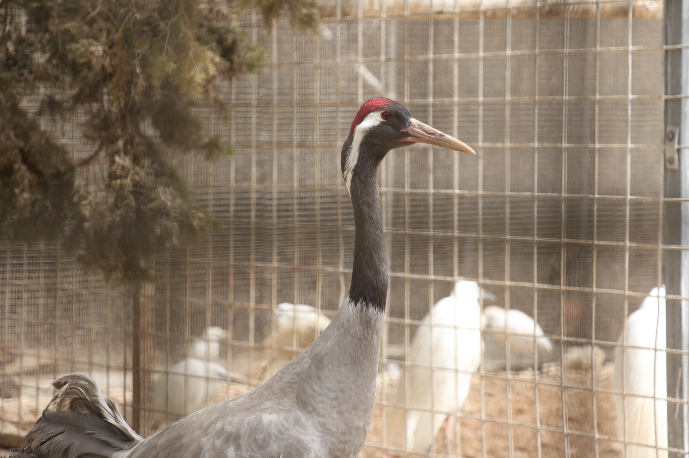 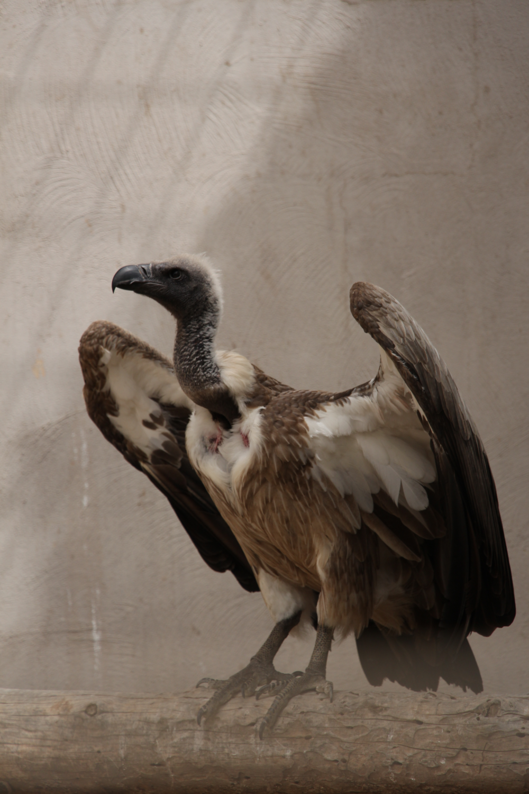
Finding it hard to choose just one? No worries. No shame in choosing more for the concepting stage.
After selecting your bird/s, create a few sketches and let your creative juices flow! Concepts help you figure out exactly which design you wish to create, so create as many concepts as you wish, the more ideas, the better!
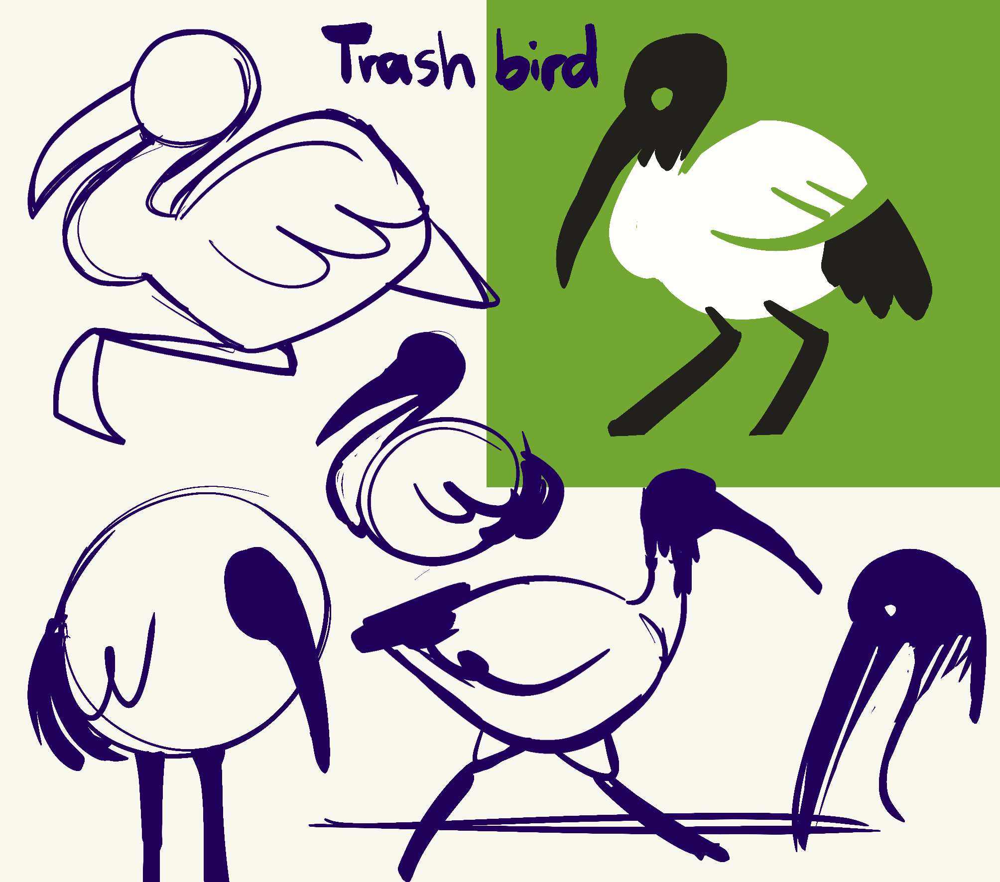 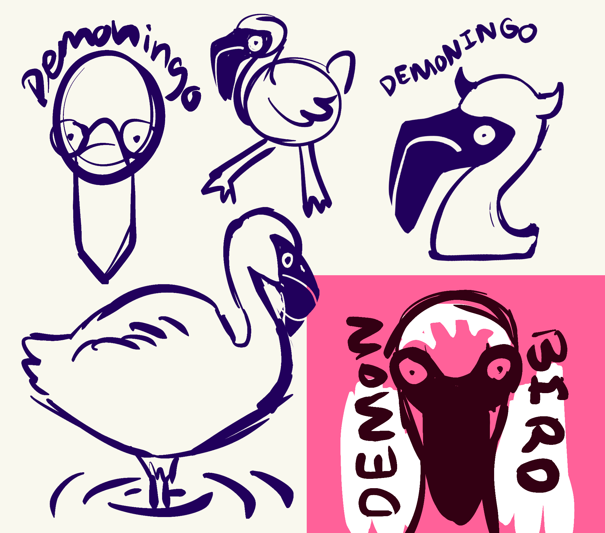 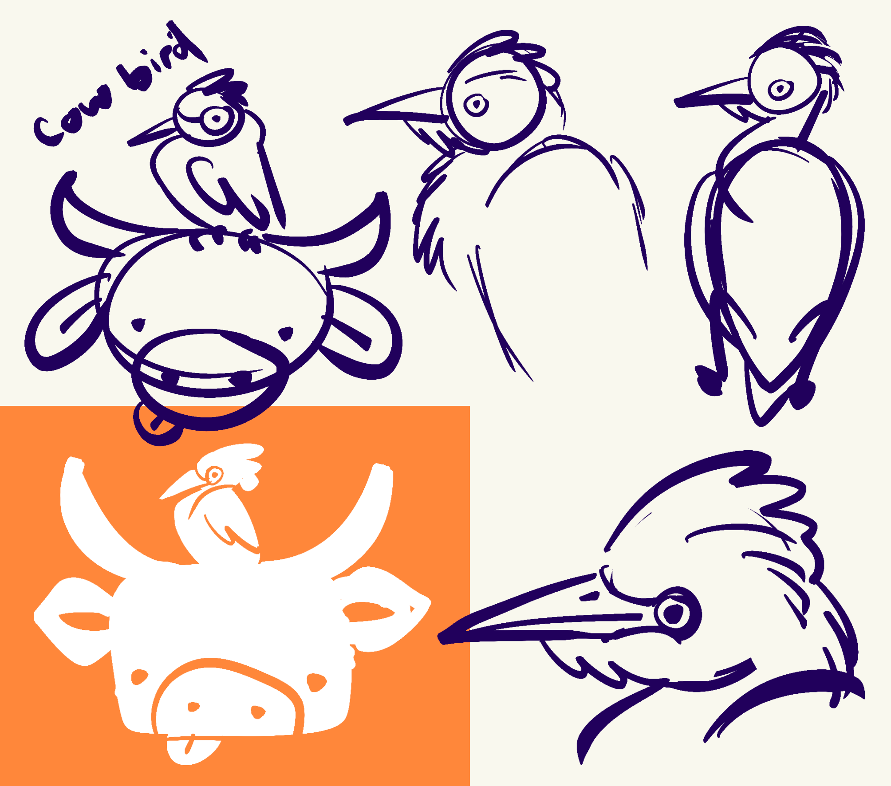
Once you have a clear idea in mind, go onto Illustrator and create a new blank file.
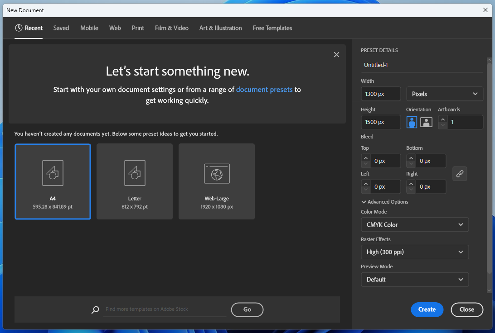 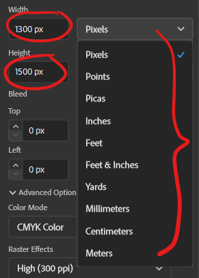
Start by creating basic shapes to build up the form of your design. Use placeholder colours, or start adding the actual colours as you wish.
Start adding the smaller details, shading and maybe some lighting? Up to you!
Export your file, and enjoy your Illustrator Birb!